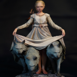
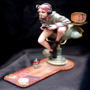

ガレージキットとは、レジンキャストなどで少数生産される組み立て式の模型を指す。「ガレキ」と略されることがある。模型メーカーによって射出成形で大量生産されるプラモデルに対し、レジンキャストやバキュームフォームのような少数生産向きの方法で作られる組み立て模型を「ガレージキット」と呼ぶ。個人やグループ、小規模なメーカーなどで作られる場合が多い。価格は一般のプラモデルに比べれば高くなる。
ガレージキットを販売している方のことを「ディーラー」という。
ガレージキットというのは”キット”という名前がついている通り「自分で組み立て・塗装を前提としている模型」である。そのため、ハードルは高いが言い方を変えれば自分の好きな色に塗装できる。未塗装、ディーラーの方の真似、自分の好みの色にと自分だけのフィギュアを作ることができる。


モデル化される対象はプラモデル以上に様々であるが、大きくキャラクターモデル系とスケールモデル系に分けられる。キャラクターモデル系の主な対象はアニメに登場する少女を中心とした各種フィギュア、怪獣・怪人、ロボット、恐竜や現生の動物などであるが、その他にも多くのオリジナルの造形物が存在する。スケールモデル系の対象はプラモデルとほぼ同じであるが、マイナーなアイテムが選ばれる場合が多い。